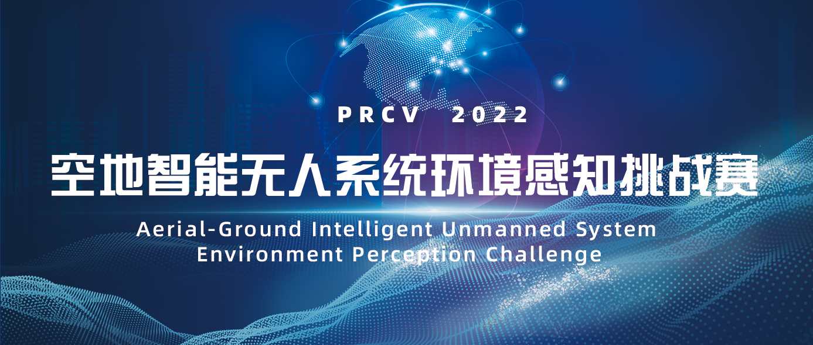
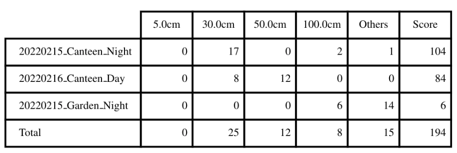
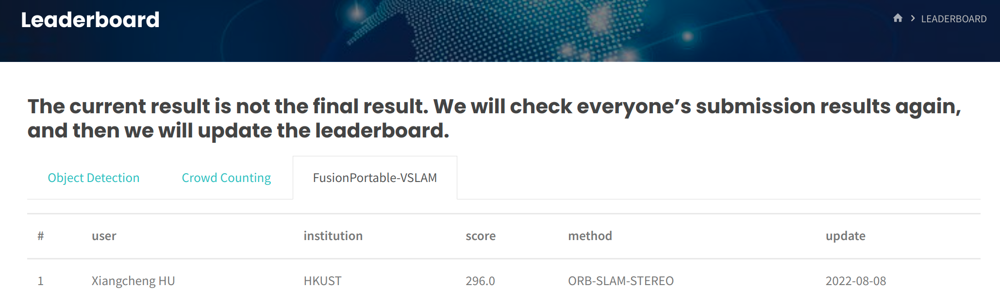
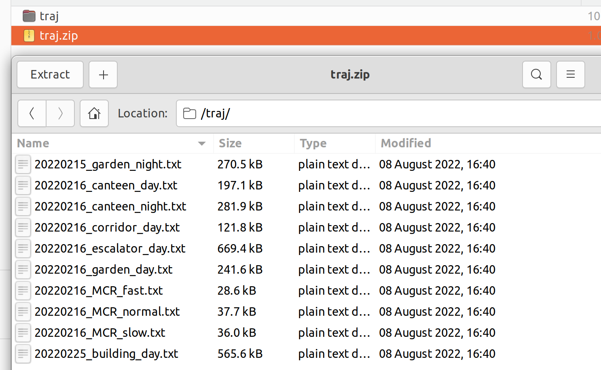
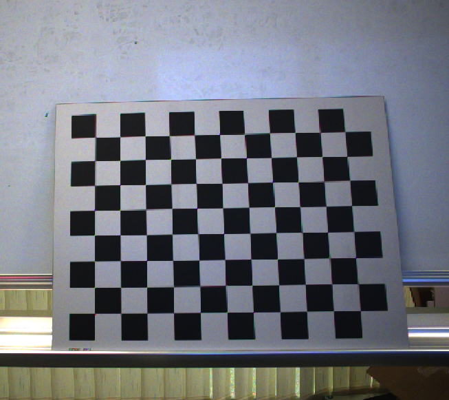
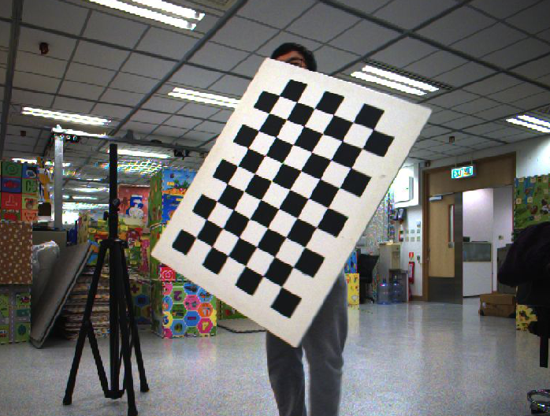
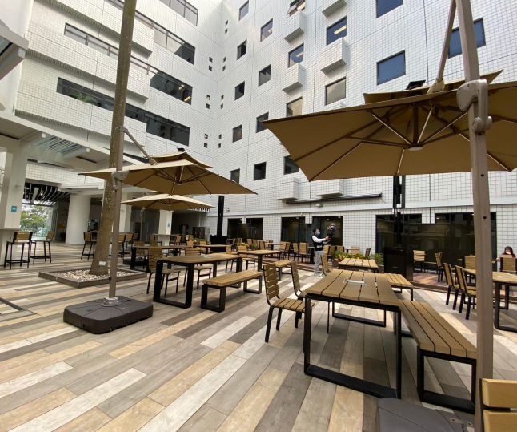
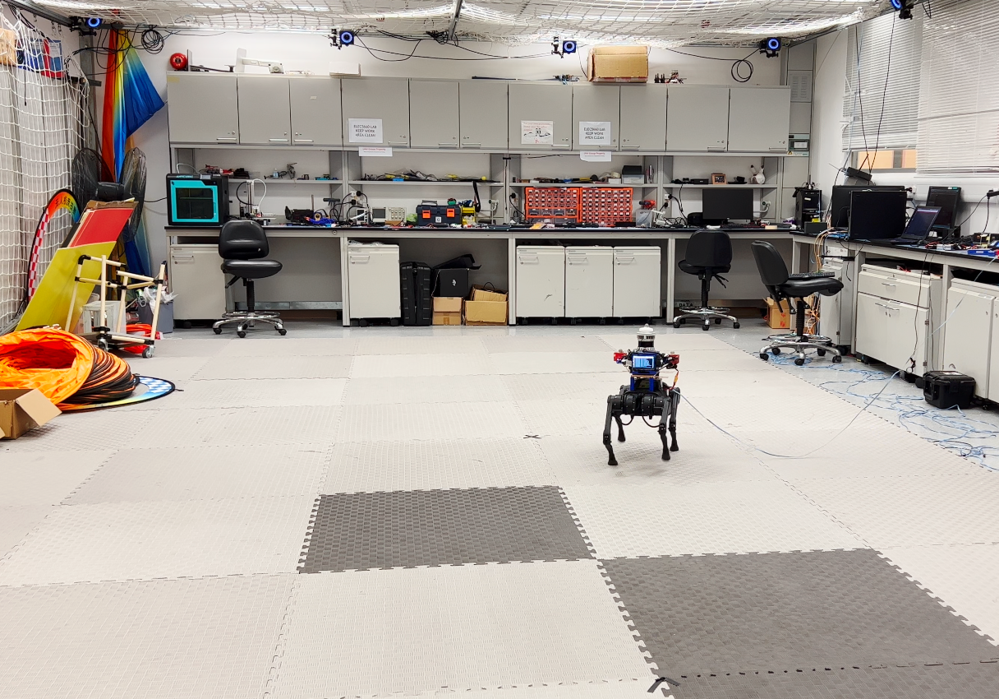
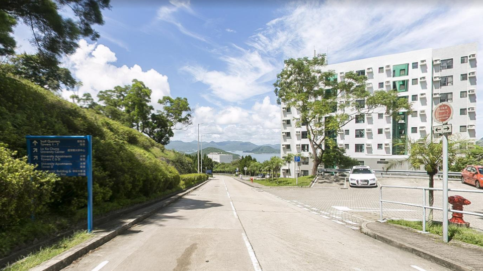
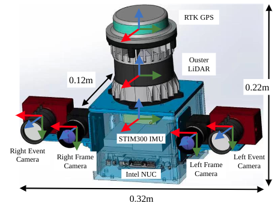

PRCV2022
The FusionPortable-VSLAM Challenge

⏬ Dataset
| 🪧 Challenge
| 🏫 RAM-LAB
| 🧱 VisDrone
| 📧 Email
| 📝 Docs
| 📃 Paper
Introduction¶
- This visual SLAM benchmark is based on the FusionPortable dataset, which covers a variety of environments in The Hong Kong University of Science and Technology campus by utilizing multiple platforms for data collection. It provides a large range of difficult scenarios for Simultaneous Localization and Mapping (SLAM).
- All these sequences are characterized by structure-less areas and varying illumination conditions to best represent the real-world scenarios and pose great challenges to the SLAM algorithms which were verified in confined lab environments.
| Sensor | Characteristics |
|---|---|
| 3D LiDAR (not provided) | Ouster OS1-128, 128 channels, 120m range |
| Frame Camera * 2 | FILR BFS-U3-31S4C， resolution: 1024 × 768 |
| Event Camera * 2 | DAVIS346, resolution: 346 × 240，2 built-in imu |
| IMU (body_imu) | STIM300 |
| GPS | ZED-F9P RTK-GPS |
| Ground Truth | Leica BLK360 Imaging Laser Scanner |

Latest News¶
- [08.10]: the evaluation codes released!
- [08.09]: the ground thruth of 20220216_garden_day released!
- [08.07]: calibration dataset released.
- [08.01]: challenge data sequences released.
Evaluation¶
Evaluation Method¶
-
We provide the tools for the trajectory evaluation here.
-
The submission will be ranked based on the completeness and frequency of the trajectory as well as on the position accuracy (ATE). The score is based on the ATE of individual points on the trajectory. Points with the error smaller than a distance threshold are added to your final score. This evaluation scheme is inspired by HILTI Challenge.
-
Output trajectories should be transformed into the body_imu frame, We will align the trajectory with the dense ground truth points using a rigid transformation. Then the Absolute Trajectory Error (ATE) of a set of discrete point is computed. At each ground truth point, extra penalty points are added to the final score depending on the amount of error at this point:
| Error | Score (points) |
|---|---|
| <= 5cm | 10 |
| <= 30cm | 6 |
| <= 50cm | 3 |
| <= 100cm | 1 |
| > 100cm | 0 |
- Each sequence will be evaluated over a maximum of 200 points, which leads to a maximum of $N\times 200$ points being evaluated among $N$ sequences.
Given an example:


Leaderboard¶
Sign up for an account and submit your results in the evaluation system, the live leaderboard will update your ranking.

Submission Guidelines¶
-
Trajectory Results
-
Please upload a .zip file consisting of a list of text files named as the sequence name shown as follows:
traj/20220215_canteen_night.txt traj/20220215_garden_night.txt traj/20220219_MCR_slow_00.txt traj/20220226_campus_road_day.txt .... -
These text files should put in a folder of "traj", and then compress as a .zip file, such as "traj.zip*"

-
The text files should have the following contents(TUM format):
1644928761.036623716 0.0 0.0 0.0 0.0 0.0 0.0 1.0 ....
Each row contains timestamp_s tx ty tz qx qy qz qw. The timestamps are in the unit of second which are used to establish temporal correspondences with the groundtruth. The first pose should be no later than the starting time specified above, and only poses after the starting time will be used for evaluation.
-
The poses should specify the poses of the body IMU in the world frame. If the estimated poses are in the frame of other sensors, one should transform these poses into the world frame of the body IMU as
T_bodyw_body = T_body_sensor * T_sensorw_sensor * T_body_sensor^(-1);. -
Do not publicly release your trajectory estimates, as we might re-use some of the datasets for future competitions.
-
A team can only register one account. Quota can only be obtained by joining the WeChat group. In order to prevent the problem of a team registering multiple accounts, this competition requires all members of the participating team to join the WeChat group. And the old account cannot be used, you need to re-register a new account.
Download¶
All data download addresses can be found in this directory ：📁
We provide the compressed rosbag data, remember to execute the following command to decompress them.
rosbag decompress 20220216_garden_day.bagCalibration Files¶
| Yaml Files | Describtion | Link |
|---|---|---|
| body_imu | extrinsics and intrinsics of the STIM300 | body_imu.yaml |
| event_cam00 | extrinsics and intrinsics of the left event camera | event_cam00.yaml |
| event_cam00_imu | extrinsics and intrinsics of the left event camera imu | event_cam00_imu.yaml |
| event_cam01 | extrinsics and intrinsics of the right event camera | event_cam01.yaml |
| event_cam01_imu | extrinsics and intrinsics of the right event camera imu | event_cam01_imu.yaml |
| frame_cam00 | extrinsics and intrinsics of the left flir camera | frame_cam00.yaml |
| frame_cam01 | extrinsics and intrinsics of the right flir camera | frame_cam01.yaml |
Test Sequences¶
| Platform | Sequence | Compressed Bag | Ground Truth | |
|---|---|---|---|---|
| Handheld |  |
20220216_garden_day | 20.4GB | 20220216_garden_day.txt |
Calibration Sequences¶
| Platform | Sequence | Compressed Bag | |
|---|---|---|---|
| Handheld |  | 20220209_StaticTarget_SmallCheckerBoard_9X12_30mm | 6.7GB |
| Handheld |  | 20220215_DynamicTarget_BigCheckerBoard_7X10_68mm | 2.3GB |
| Handheld |  |
20220209_Static_IMUs_3h20mins | 894MB |
Challenge Sequences¶
| Platform | Sequence | Compressed Bag | |
|---|---|---|---|
| Handheld |  | 20220216_canteen_night | 15.9GB |
| 20220216_canteen_day | 17.0GB | ||
|
20220215_garden_night | 8.5GB | |
| 20220216_garden_day | 20.4GB | ||
 |
20220216_corridor_day | 27.4GB | |
 |
20220216_escalator_day | 31.7GB | |
 |
20220225_building_day | 37.5GB | |
 |
20220216_MCR_slow | 3.5GB | |
| 20220216_MCR_normal | 2.2GB | ||
| 20220216_MCR_fast | 1.7GB | ||
| Quadruped Robot |  | 20220219_MCR_slow_00 | 9.7GB |
| 20220219_MCR_slow_01 | 8.4GB | ||
| 20220219_MCR_normal_00 | 7.1GB | ||
| 20220219_MCR_normal_01 | 6.5GB | ||
| 20220219_MCR_fast_00 | 7.6GB | ||
| 20220219_MCR_fast_01 | 8.5GB | ||
| Apollo Vehicle |  | 20220226_campus_road | 72.3GB |
FAQ¶
- How are the frames defined on the sensor setup?
The picture below is a schematic illustration of the reference frames (red = x, green = y, blue = z):

- Is the ground truth available?
We will provide some sample datasets along with their ground truth collected with the same sensor kit, but the ground truth for the challenge sequences is not available. However, you can submit your own results in the website evaluation system for evaluation.The ground truth for all challenge sequences will finally be announced at the PRCV WORKSHOP in October.
Star History¶

Publication¶
When using this work in an academic context, please cite the following paper:
FusionPortable: A Multi-Sensor Campus-Scene Dataset for Evaluation of Localization and Mapping Accuracy on Diverse Platforms
Jianhao Jiao*, Hexiang Wei*, Tianshuai Hu*, Xiangcheng Hu*, Yilong Zhu, Zhijian He, Jin Wu, Jingwen Yu, Xupeng Xie, Huaiyang Huang, Ruoyu Geng, Lujia Wang, Ming Liu
Presented at IROS 2022
[paper]
[bibtex]
Acknowledgement¶
This challenge was supported by the Wireless Technology.
We would like to thank the AISKYEYE Team at Lab of Machine Learning and Data Mining of Tianjin University, for hosting our challenge at the PRCV2022 workshop. Futher, this challenge would not have been possible without the assistance of Prof.Ming Liu, Prof.Lujia Wang, Prof.Pengfei Zhu, Prof.Dingwen Zhang, Dr.Zhijian He and Dr.Jianhao Jiao for the great support in organizing the challenge, verifying the data and providing the HILTI Challenge 2022 as template for this challenge.
We would also like to thank Prof.Jack Chin Pang CHENG and his team for the support of dense mapping device.
License¶
All datasets and benchmarks on this page are copyright by us and published under the Creative Commons license (CC BY-NC-SA 3.0), which is free for non-commercial use (including research).